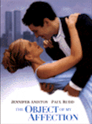
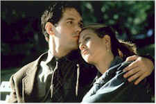
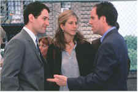

Contents | Features | Reviews | News | Archives | Store |
 |
|
| Movie Credits | Buy It! |
The Object of My Affection
Review by Elias Savada
Posted 17 April 1998
|  | Directed by Nicholas Hytner Starring
Jennifer Aniston, Paul Rudd, John Pankow, Screenplay by Wendy Wasserstein, |
This is a more than mild laughter – on par with and what many viewers and critics will compare to last year's My Best Friend’s Wedding – peppered with brief, finely drawn, and genuinely hilarious performances by numerous characters that pop in and out of a scene here ... a scene there. I'll comment further on some of these actors a little later, but let me say now that they certainly helped push the picture above the run-of-the-mill original 1987 novel by Stephen McCauley. The screenplay, nurtured and now born after ten-year incubation at the hands of Wendy Wasserstein, is, incredibly, her first produced film script after a ever-growing career as an accomplished playwright, having won the Pulitzer Prize and a slew of other trophies for her play "The Heidi Chronicles." She adds numerous theatrical references throughout the film, including a elementary school production of The Little Mermaid and a modern verse adaptation of Shakespeare.
Jennifer Aniston stars in her second starring vehicle for Fox after Picture Perfect, her lame debut film with that studio. She's continues to grow as an actress in the several films she's tackled (but don't dare consider renting 'Til There Was You, a stinker that defines the genre). Here she's Nina Borowski, a mussy-haired community center counselor, a free spirit that gets involved in a tale of unrequited love. Girl meets Boy. Boy is Gay. Oy Vay. Er, I mean (and she thinks), that's okay. But ... what is a poor Girl to do? Well, if you're Nina, you get lots of advice, including from first grade teacher George Hanson (Paul Rudd), the titular character who becomes her closest friend, sharing her secrets, her Brooklyn walk up, her Haagen-Dazs, and a never-ending string of dance lessons. George's sexual leanings on the surface do not seem to phase Nina, but if the tension didn't mount, the movie wouldn't be very interesting.
Nina and George carry on a great relationship until she becomes pregnant by attorney boy friend Vince McBride (John Pankow, a.k.a. Cousin Ira from Mad About You), an arrogant, jealous homophobe who Nina deserts in a moment of enlightenment. She asks the temporarily unattached George to become a surrogate parent to the unborn child, but their plan for a marriage without sexual foundation crumbles when George's heart goes out to another.
Director Nicholas Hytner, one of Britain's most lauded stage directors, made a truly remarkable film debut with The Madness of King George, starring Nigel Hawthorne, who has a small but key role in Object as an aging drama critic whose significant other Paul (Amo Gulinello) becomes his ex-s.o. and the object of George's affections. Hytner's third outing, after a brilliant film adaptation of Arthur Miller's The Crucible, is, obviously, his lightest work to date, yet it still retains the director's interest in dealing with themes of dignity and conflict. The film floats along for nearly two hours, with Hytner displaying a keen eye for intercutting scenes, until the picture arrives at a too contrived ending. Yeah, it's feel-good, but it's more coincidental than it is rational. The pacing is right on and the camerawork by Oliver Stapleton (a longtime collaborator with Stephen Frears) is fresh and appealing. Five-time Oscar-nominee George Fenton provides a light score that perhaps slightly overplays the 1929 standard "You Were Meant for Me" (as seen in a clip from Singin' in the Rain with Gene Kelly and Debbie Reynolds).
The supporting cast is headlined by Allison Janney and Alan Alda as Sidney and Constance Miller, Nina's upscale step-sister and her nearly-oblivious agent husband, forever dropping celebrity names (King Hussein, Norman Mailer, Colin Powell, to name a few) at their Hampton estate and providing Nina with an endless barrage of wacky advice. Tim Daly (fresh from the final season of Wings) is Dr. Robert Joley, a self-obsessed delusional who dumps George as the film begins and becomes an easy foil with each additional sighting.
But it's the small pop-up appearances that flutter about the film that really make this an enjoyable feature. Quirky characters all, from Mrs. Sarni (Marilyn Dobrin), Nina's nosey downstairs neighbor; to Madame Reynolds (Joan Copeland), a red-haired, eye-patched dance instructor; to Dr. Jonathan Goldstein (Bruce Altman), an ear-nose-and throat man who is more interested in leather than skin; to Mrs. Ochoa (Antonia Rey), the proud mother of a latino lesbian daughter; to Carmelita (Iraida Polanco), the Miller's latino housekeeper who gets gardening hints from Martha Stewart.
You'll have no objection if you let this movie steal your affections for a pleasant two hours in the dark.
Contents | Features | Reviews | News | Archives | Store
Copyright © 1999 by Nitrate Productions, Inc. All Rights Reserved.